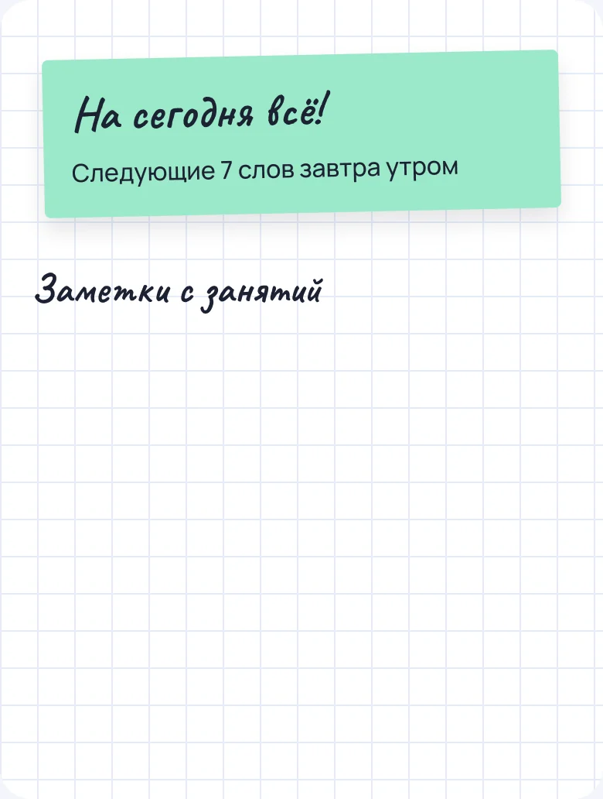
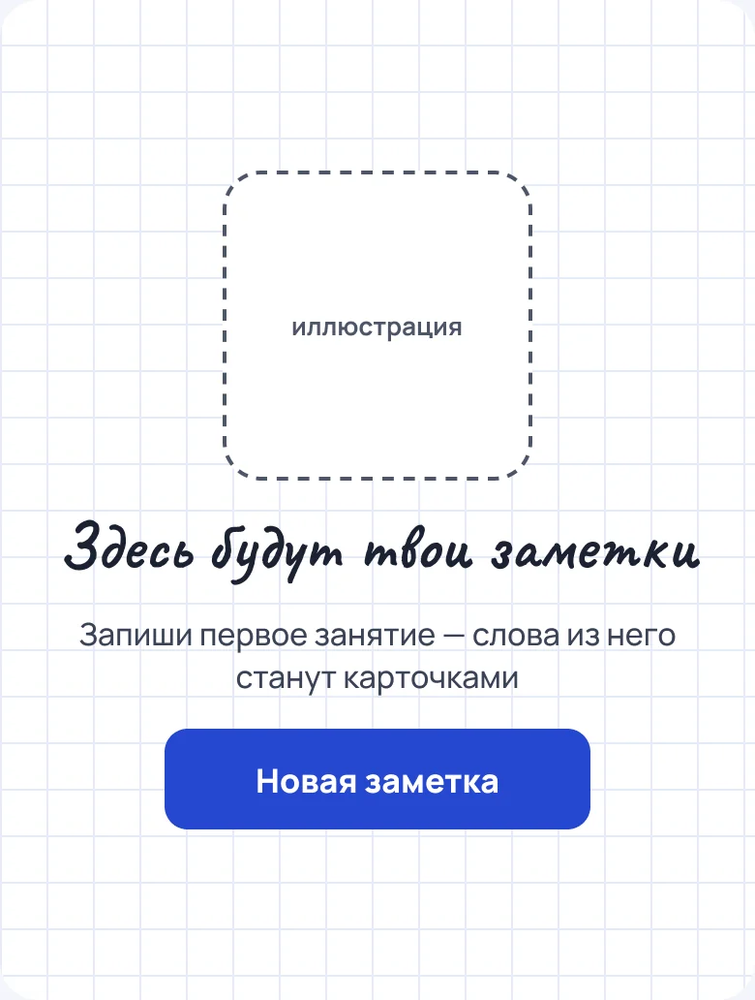
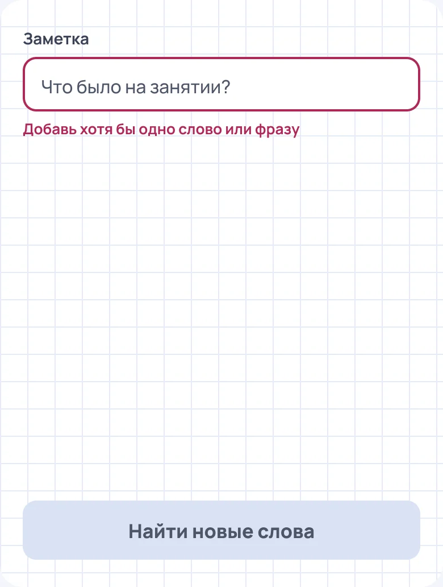
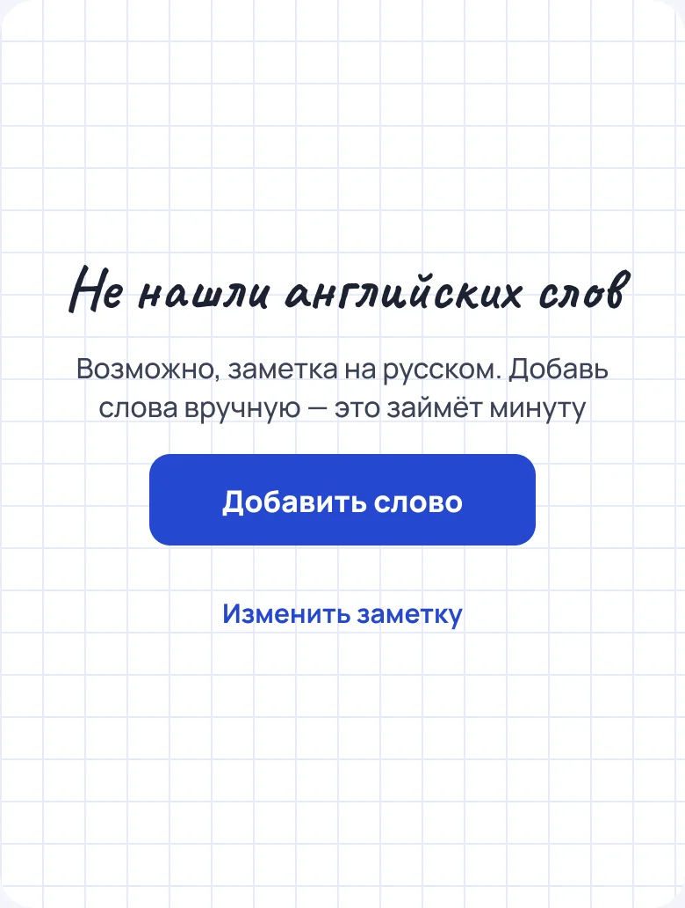
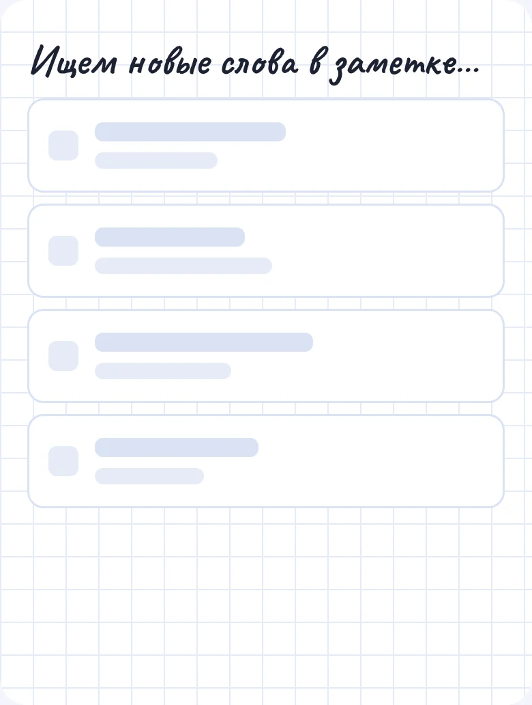
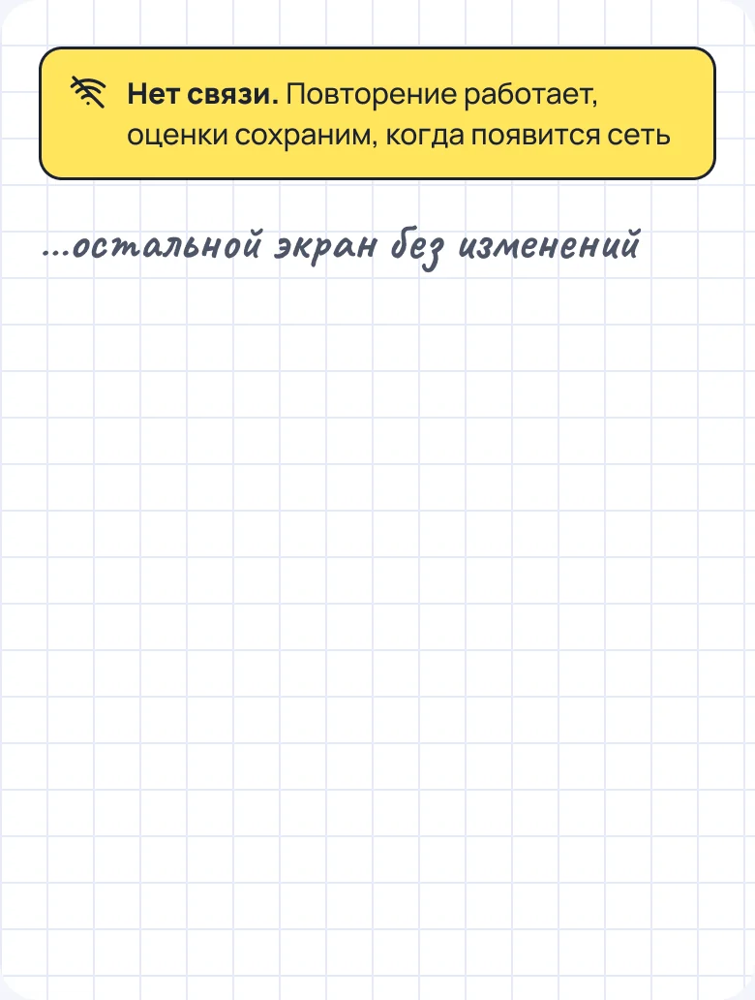
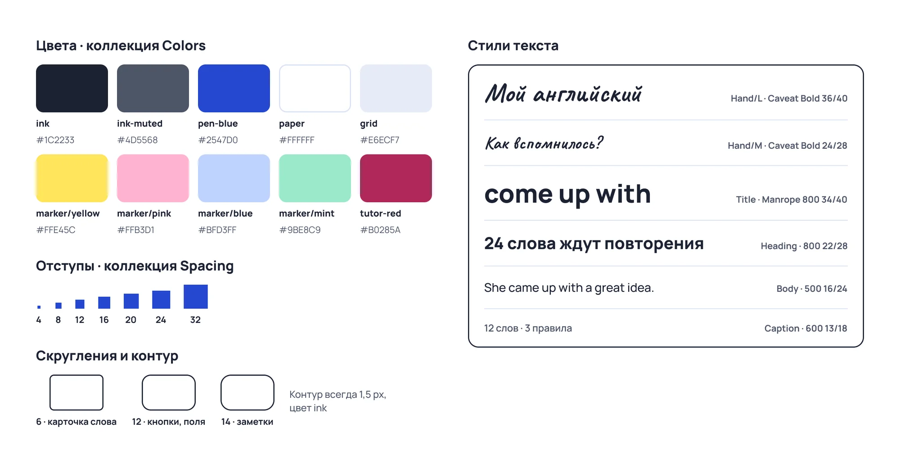
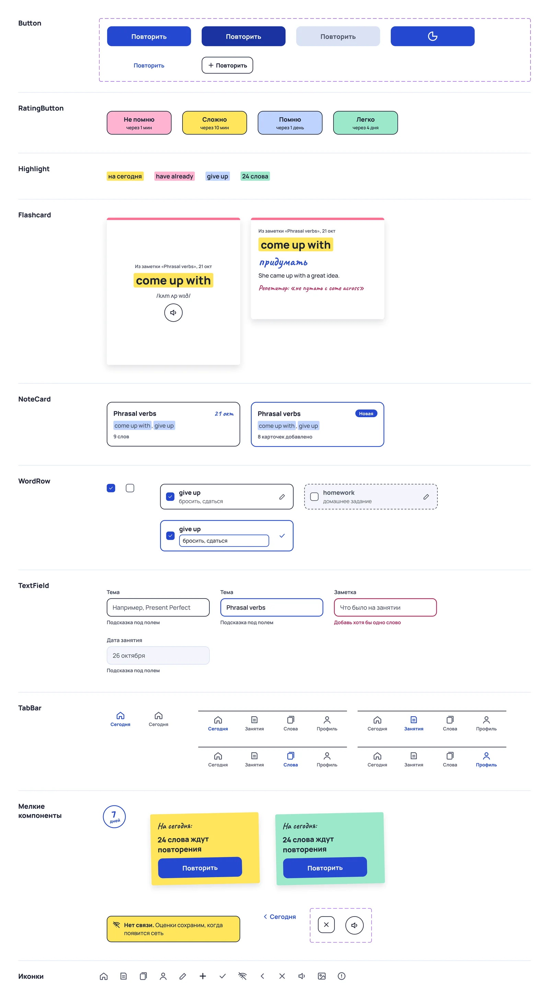

Я занимаюсь английским с репетитором, и после каждого урока у меня остаётся тетрадь: новые слова, правила, пометки вроде «не путать с come across». Через неделю нужное слово в ней уже не найти, а повторять по тетради неудобно: непонятно, что я уже знаю, а что пора освежить.
Приложения-словари решают это наполовину. Каждое слово туда нужно вбивать отдельно, и оно теряет связь с занятием, на котором появилось.
Отсюда идея: записываешь заметку как в тетради, приложение само находит в ней английские слова, делает из них карточки и возвращает их на повторение через нужный интервал.
Основной сценарий
Сегодня
Новая заметка
Слова из заметки
Карточка
Оценка
Итог
01 · Сегодня
Главное действие дня — повторить слова, поэтому стикер с их количеством стоит первым. Ниже заметки по датам, а печать с числом дней подряд помогает не бросить.
02 · Новая заметка
Одно большое поле вместо формы на каждое слово. Пишешь как в тетради, разбирать текст будет приложение.
03 · Слова из заметки
Найденные слова сразу с переводом. Знакомые снимаешь галочкой, неточный перевод правишь карандашом, и на кнопке видно, сколько карточек добавится.
04 · Карточка
Над словом подписано, из какой заметки оно пришло: контекст урока помогает вспомнить. Кнопка озвучки — для произношения.
05 · Оборот и оценка
На обороте перевод, пример и пометка репетитора. Под каждой из четырёх оценок написано, когда слово вернётся, — так интервальное повторение не выглядит чёрным ящиком.
06 · Итог
Короткий итог: сколько слов вспомнилось сразу и когда вернутся остальные. Место под иллюстрацию оставила для своей отрисовки.
Визуальный стиль: тетрадь репетитора
Хотелось, чтобы приложение было продолжением тетради, а не ещё одним строгим словарём. Отсюда клетка на фоне, рукописный Caveat в заголовках и выделение маркером. Основной текст набран Manrope, чтобы он легко читался.
У цвета маркера есть смысл, и он одинаковый на всех экранах.
На сегодняmarker/yellow
Грамматикаmarker/pink
Новое словоmarker/blue
Успехmarker/mint
Состояния
Кроме основного сценария нарисовала случаи, когда что-то идёт не так или данных ещё нет.
Сегодня / Всё повторено

Сегодня / Первый запуск

Новая заметка / Пустая

Слова / Не нашлись

Слова / Загрузка

Любой экран / Нет связи

Дизайн-система
Перед экранами я собрала основу. Цвета и отступы заведены переменными (Colors и Spacing), шрифты — текстовыми стилями. Поэтому любой цвет или размер на макетах меняется в одном месте.
Все элементы — компоненты с вариантами и свойствами: у кнопки шесть вариантов, у поля ввода четыре состояния, у карточки лицевая сторона и оборот, иконки во вкладках меняются через instance swap. Экраны собраны только из копий этих компонентов, поэтому правка в мастере сразу видна везде.
Стили и переменные

Компоненты

Прототип
Экраны связаны в кликабельный прототип: со стикера попадаешь в карточки, карточка переворачивается анимацией Smart animate, оценка ведёт к итогу.
Что дальше
Проверить сценарий на пяти студентах, которые занимаются с репетитором: понятно ли без подсказок, что слова находятся автоматически.
Добавить тёмную тему через режимы переменных — структура палитры к этому готова.
Связать макеты с бэкендом: поиск слов в заметке и расписание повторений я делаю на FastAPI.